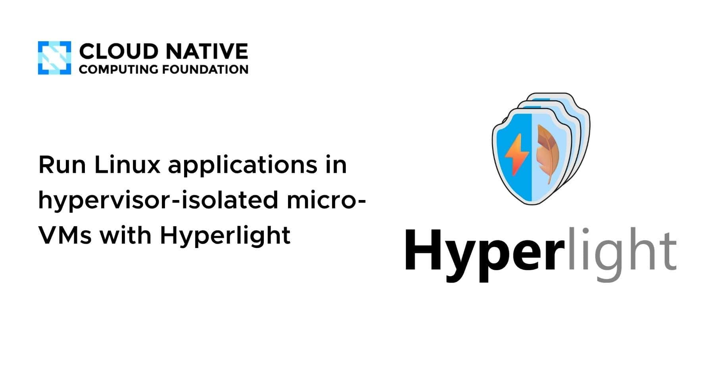
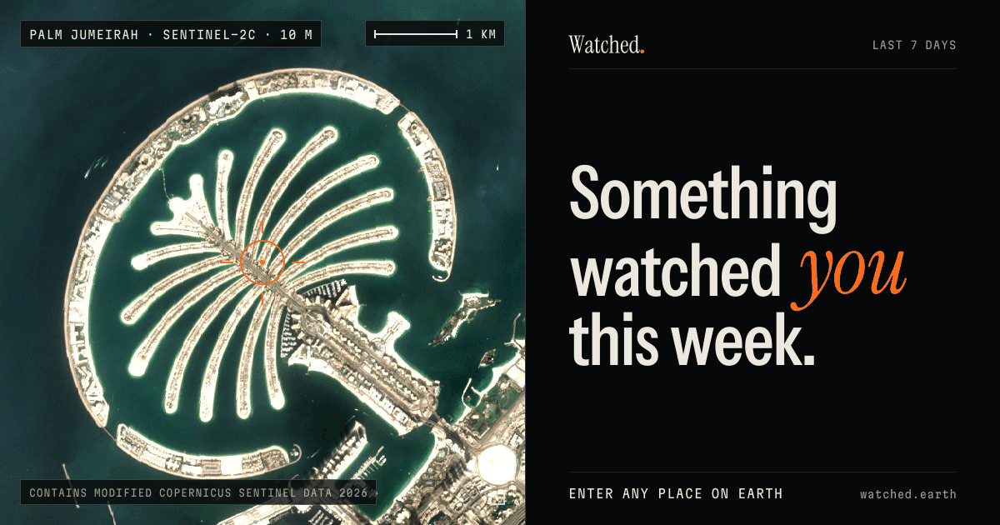
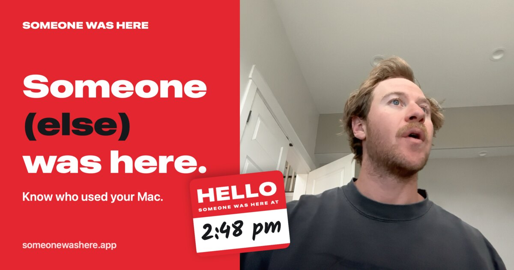
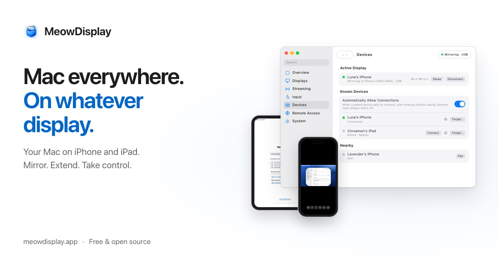

🔥 Top 3 (must read)
A year after the 100% AI mandate nobody understands our code
(HN discussion, 114 points, 137 comments) A developer writes about their team one year after leadership required all code to be written by AI. They say nobody on the team understands the codebase anymore. Why it matters: As an EM you decide how your team uses AI. This is a real warning about what happens when you push AI use with no rules for code ownership or review.
R
Ship It Conversations: Ryan Packer of BambooHR on CTOs coding again, AI straining CI/CD, and every engineer getting a team of agents
The BambooHR CTO (and former Adobe VP of Engineering) talks about writing code again and building a "software factory". He also covers what happens to CI/CD when every engineer runs a fleet of agents. He also asks a hard question: who trains junior engineers when AI fixes the bugs? Why it matters: It covers three things you care about in one episode: CI pipelines, how teams adopt AI, and growing junior and mid-career engineers.
R
Run Linux applications in hypervisor-isolated micro-VMs with Hyperlight
More systems now run code nobody on the team wrote, such as Python an AI agent just generated or a plugin a customer uploaded. Hyperlight runs that code in small virtual machines, with a hypervisor wall between it and the rest of the system. (A hypervisor is the layer that keeps each virtual machine separate.) Why it matters: If you let coding agents or users run code on your infrastructure, you need a safe sandbox. This one is designed for that job.

🤖 AI for developers
See the Top 3. The "100% AI mandate" story and the Ship It episode are today's main AI-for-teams items.
🎯 For me
AI mandate story
EM angle: Read the together with the Ship It episode. The first shows a failure mode. The second shows how a CTO is planning for agents at scale, including the extra load on CI/CD. Together they are good input for your team's own AI usage rules.
R
Today had no Node.js, React, Flutter, or Playwright/Maestro news.
💡 App ideas & indie builds
watched.earth
(HN, 242 points): Pick any place and see every satellite that passed over it this week, with its photos. Problem: Satellite data is public but hard for normal people to explore. Inspiration: Take a large, dull public dataset and give it a simple "type your place" entry point.

Someone Was Here
(HN, 68 points): Shows who used your Mac while you were away. Problem: People want to know if someone touched their laptop at home, at work, or in a café. Inspiration: A small, emotional problem that one simple utility can solve. Easy to explain in one sentence.

MeowDisplay
(HN, 78 points): Apple's iPhone Mirroring shows your iPhone on your Mac. This app does the opposite direction. Problem: Apple's built-in feature only works one way. Inspiration: Look for a platform feature that works in only one direction, then build the missing direction.

DBDelve
: An open-source database client written in Rust with the GPUI framework. Problem: Many DB clients are slow, heavy, or paid. Inspiration: A fast native tool can still win in a crowded developer-tool space.
N
🎓 Try this
Sandbox agent-generated code with Hyperlight. Do you have a pipeline where an AI agent writes and runs scripts, for example test generation or data fixes? Follow the guide and run one of those scripts in a Hyperlight micro-VM instead of a normal container. Then check two things: how fast it starts, and what the code can and cannot reach.